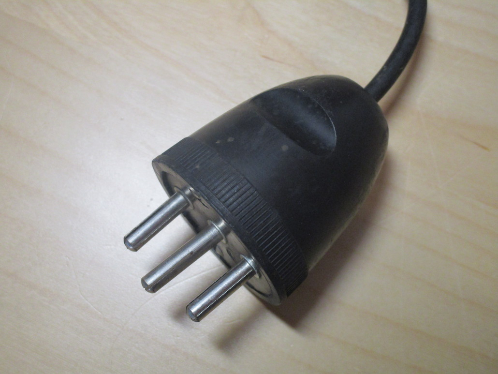
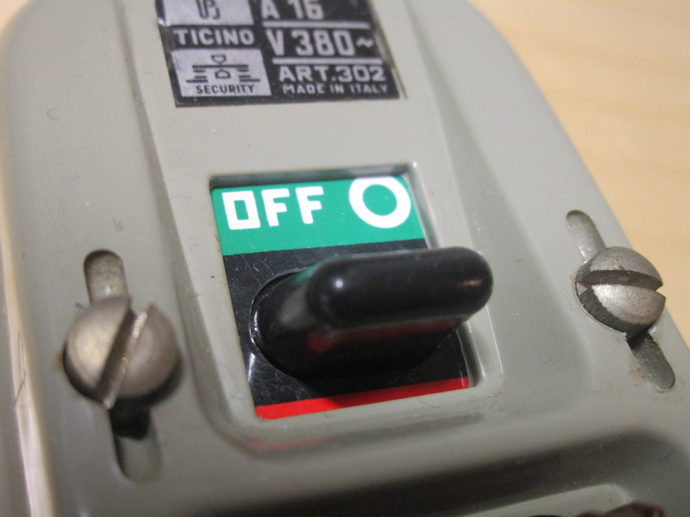
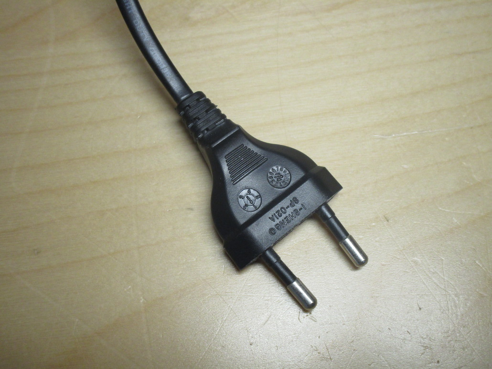
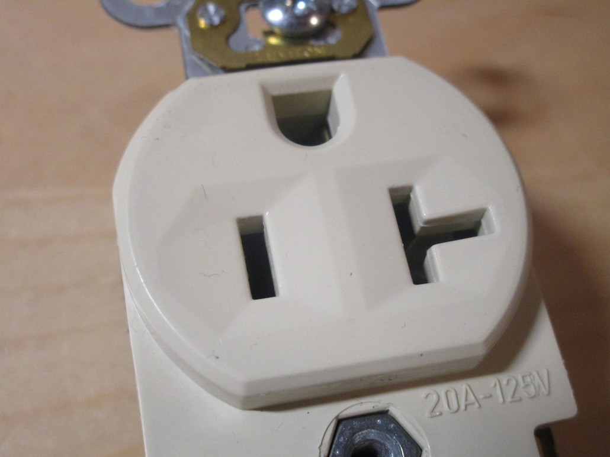
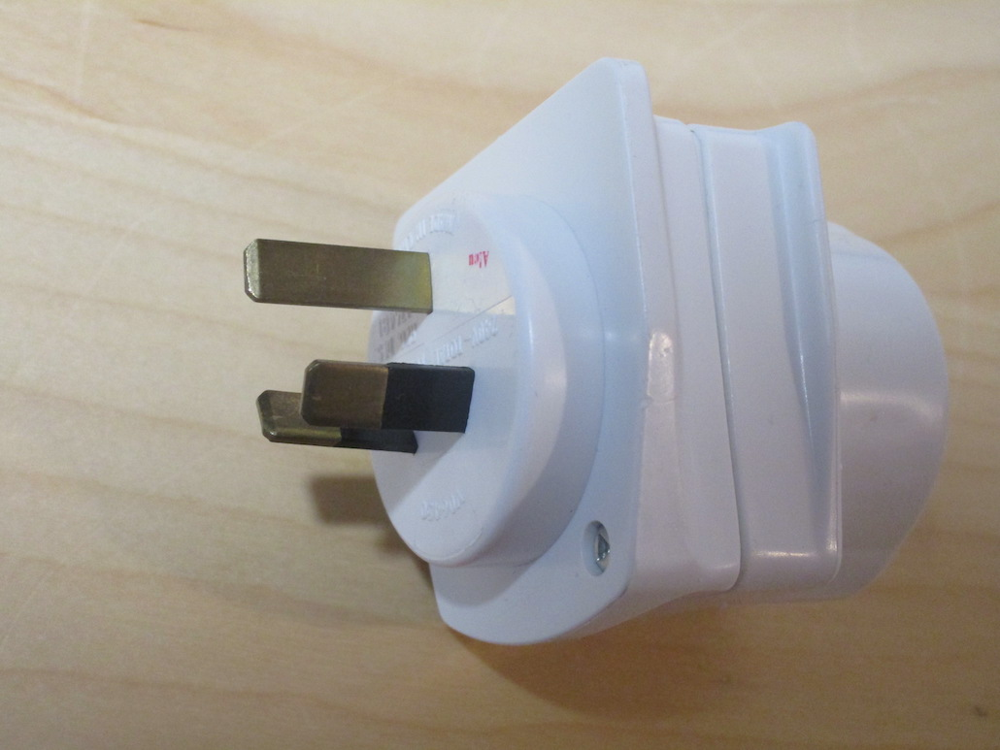

Electrical items
History and general info:
 General information
General information
History of the Italian electrical system
Items:
 Vintage plugs and sockets
 Vintage fuseboxes
 Modern stuff
Other things:
 Things from other countries
 Travel adaptors
Other pages:
- Old plugs, limited electrical supplies, and more [Twitter] [Thread Reader App]
- [VIDEO] Weird Old Plugs from Italy, and How They're Built
External resources:
- The excellent Museum of Plugs and Sockets
- Museum of Old Electrical Items (UK only)
Thanks for visiting my site!